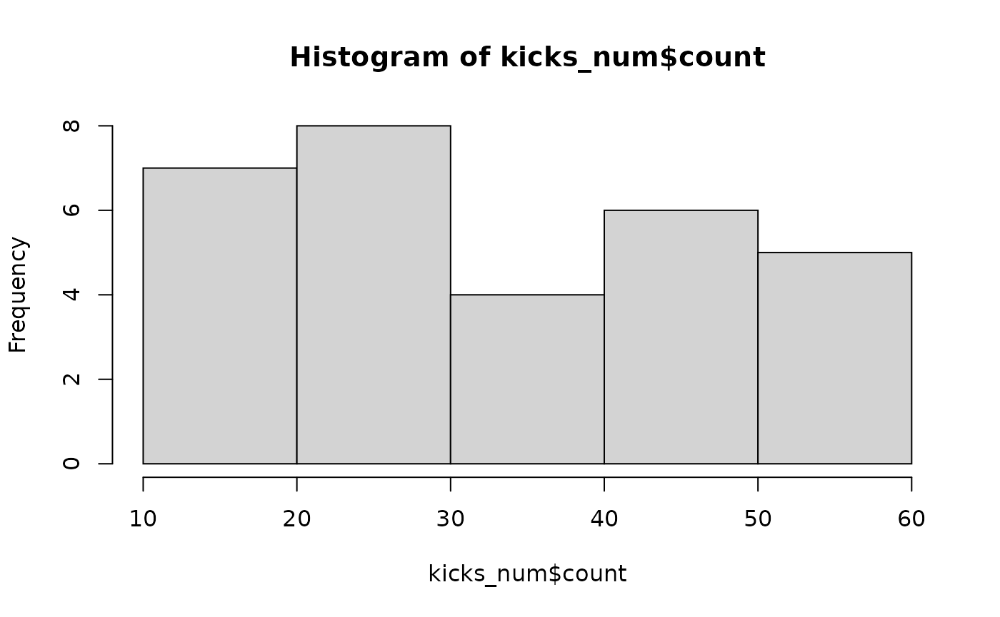

univariate_continuous.RmdType library(statdata) and then, datasets in the statdata package are avaiable.
library(dplyr)
#>
#> Attaching package: 'dplyr'
#> The following objects are masked from 'package:stats':
#>
#> filter, lag
#> The following objects are masked from 'package:base':
#>
#> intersect, setdiff, setequal, union
library(readr)
library(magrittr)
library(purrr)
#>
#> Attaching package: 'purrr'
#> The following object is masked from 'package:magrittr':
#>
#> set_names
library(fs)
library(skimr)
library(statdata)kicks_num dataset contains number of success in the traditional Korean game, Jegichagi.
skimr package contains skim() function, which is an improved version of summary function. This one line command spits out all the descriptive statstics needed to understand the continuous variable.
skimr::skim(kicks_num)| Name | kicks_num |
| Number of rows | 30 |
| Number of columns | 1 |
| _______________________ | |
| Column type frequency: | |
| numeric | 1 |
| ________________________ | |
| Group variables | None |
Variable type: numeric
| skim_variable | n_missing | complete_rate | mean | sd | p0 | p25 | p50 | p75 | p100 | hist |
|---|---|---|---|---|---|---|---|---|---|---|
| count | 0 | 1 | 33.9 | 14.44 | 12 | 25 | 30 | 46.75 | 59 | ▇▇▃▆▅ |
We can visualize the univariate continouse variable with histogram or stem-and-leaf plot. There are various ways to visualize histogram, but the simplest way is to use hist().
hist(kicks_num$count)
The stem-and-leaf plot is also possible.
stem(kicks_num$count)
#>
#> The decimal point is 1 digit(s) to the right of the |
#>
#> 1 | 24
#> 1 | 67889
#> 2 |
#> 2 | 55567778
#> 3 | 23
#> 3 | 66
#> 4 | 4
#> 4 | 56778
#> 5 | 24
#> 5 | 599